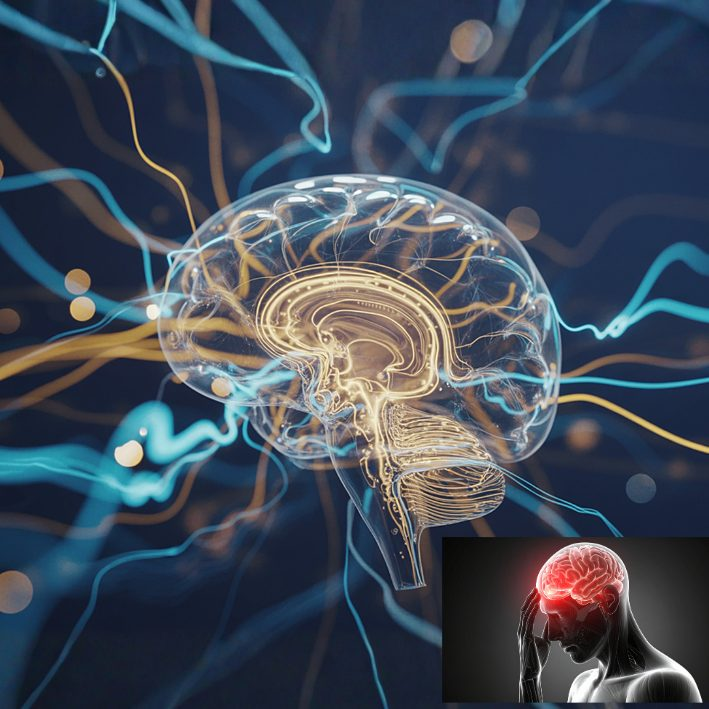

Signes neurologiques à ne pas négliger
Un mal de tête soudain et sévère différent de tout ce qui a été ressenti auparavant, un engourdissement ou une faiblesse nouvelle d'un côté du corps, une élocution empâtée, des changements soudains de la vision, ou des vertiges et évanouissements répétés méritent tous une attention médicale rapide — certains d'entre eux peuvent signaler une urgence.
Signes nécessitant une attention urgente
- Un mal de tête soudain et sévère, différent de tout ce que vous avez connu auparavant
- Un engourdissement ou une faiblesse nouvelle du visage, d'un bras ou d'une jambe, d'un seul côté
- Une élocution empâtée ou difficile, ou des difficultés à comprendre les autres
- Une perte de vision soudaine ou une vision double
- Des vertiges répétés, une perte d'équilibre ou des évanouissements
Ces symptômes peuvent être des signes précoces d'un accident vasculaire cérébral, où chaque minute compte. S'ils apparaissent soudainement, appelez immédiatement le SAMU (114) plutôt que d'attendre de voir s'ils passent.
Signes méritant une évaluation posée
Tout ce qui est d'ordre neurologique n'est pas une urgence. Des maux de tête récurrents, des picotements ou des fourmillements dans les mains ou les pieds, des vertiges occasionnels, ou des troubles de mémoire commençant à affecter la vie quotidienne méritent tous d'être mentionnés lors d'une consultation — même s'ils durent depuis un moment et ne semblent pas urgents.
Ce qui se passe lors d'une consultation
Une consultation de médecine interne commence généralement par un interrogatoire détaillé et un examen neurologique ciblé, ce qui permet souvent de bien cerner le problème avant même que des examens complémentaires ne soient nécessaires. Ensuite, il s'agit de déterminer ce qui se passe et si une orientation vers un spécialiste — un neurologue, par exemple — est nécessaire, ou si le problème peut être pris en charge et suivi directement.
Une question sur vos propres symptômes ? Contactez-nous directement.
Écrire sur WhatsAppCet article fournit des informations générales sur la santé et ne remplace pas une consultation médicale. En cas d'urgence médicale, appelez le SAMU (114) ou rendez-vous à l'hôpital le plus proche.